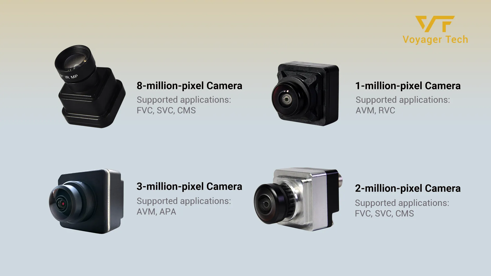

In Q1 2026, Voyager Tech, leveraging its self-developed smart vision sensing technology solution, successfully secured the project from Chery Commercial Vehicle. The company will supply high-performance automotive-grade 3MP around-view camera products for Chery Commercial Vehicle's new models. This marks another recognition of Voyager Tech's product competitiveness and technical adaptability in the field of commercial vehicle smart vision sensing by a leading automotive enterprise.
Currently, the intelligentization of commercial vehicles has entered a period of rapid development. As one of the core technologies, visual perception not only supports the implementation of smart assisted driving systems but also helps drive the evolution of commercial vehicle intelligentization to a higher level, shifting from "function popularization" to "experience optimization". As an enterprise with 13 years of deep cultivation in the in-vehicle vision field, Voyager Tech, with its full-stack self-developed capabilities and large-scale manufacturing advantages, has created a standardized solution adapted to the complex working conditions of commercial vehicles. Voyager Tech's smart vision sensing series (VT-Camera) features high resolution, low power consumption, and strong anti-interference performance. It can accurately identify targets such as vehicles, pedestrians, and lane lines, and is compatible with L2+ level intelligent driving assistance functions, including blind spot monitoring, panoramic surround view, and smart assisted parking, providing full-scenario visual perception support for commercial vehicles. Beyond serving as the "eyes" of smart assisted parking, visual perception technology also helps improve safety and logistics efficiency, and optimize the driving experience.

The 3MP ultra-wide-angle AVM camera in this project adopts an integrated design of the lens and front housing, which can effectively solve the problem of lens falling off and help improve the overall reliability and service life of the camera module. The 3MP ultra-wide-angle AVM cameras can be installed at the front, rear, left, and right of the vehicle body respectively, to collect high-definition images around the vehicle in real time. After image correction, perspective conversion, and image stitching, a 360° panoramic bird's-eye view is generated and synchronized to the in-vehicle navigation system, helping drivers more clearly grasp the surrounding environment of the vehicle, and smoothly complete operations such as parking, obstacle avoidance, and driving in complex road conditions.
Voyager Tech's smart vision sensing solution has accumulated mature overseas market experience. Its core advantage lies in the full-stack self-developed system of "algorithm + hardware + certification", which realizes in-depth adaptation to road conditions and regulations in different regions.